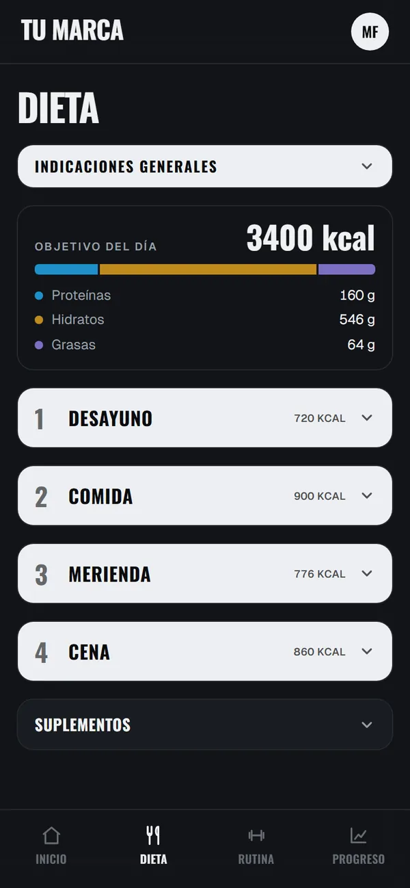
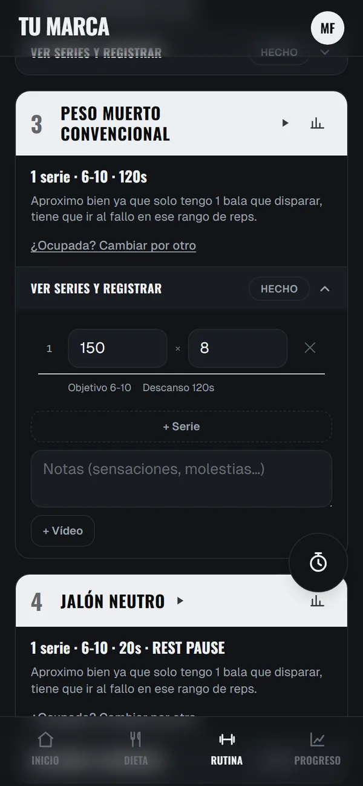
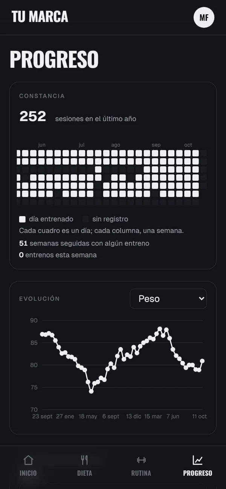
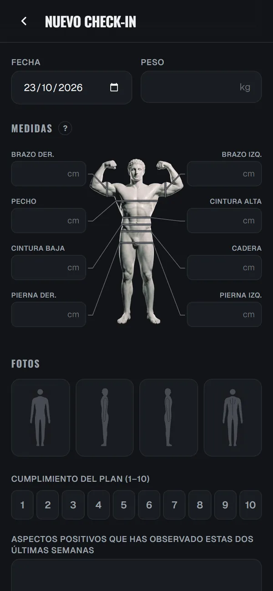
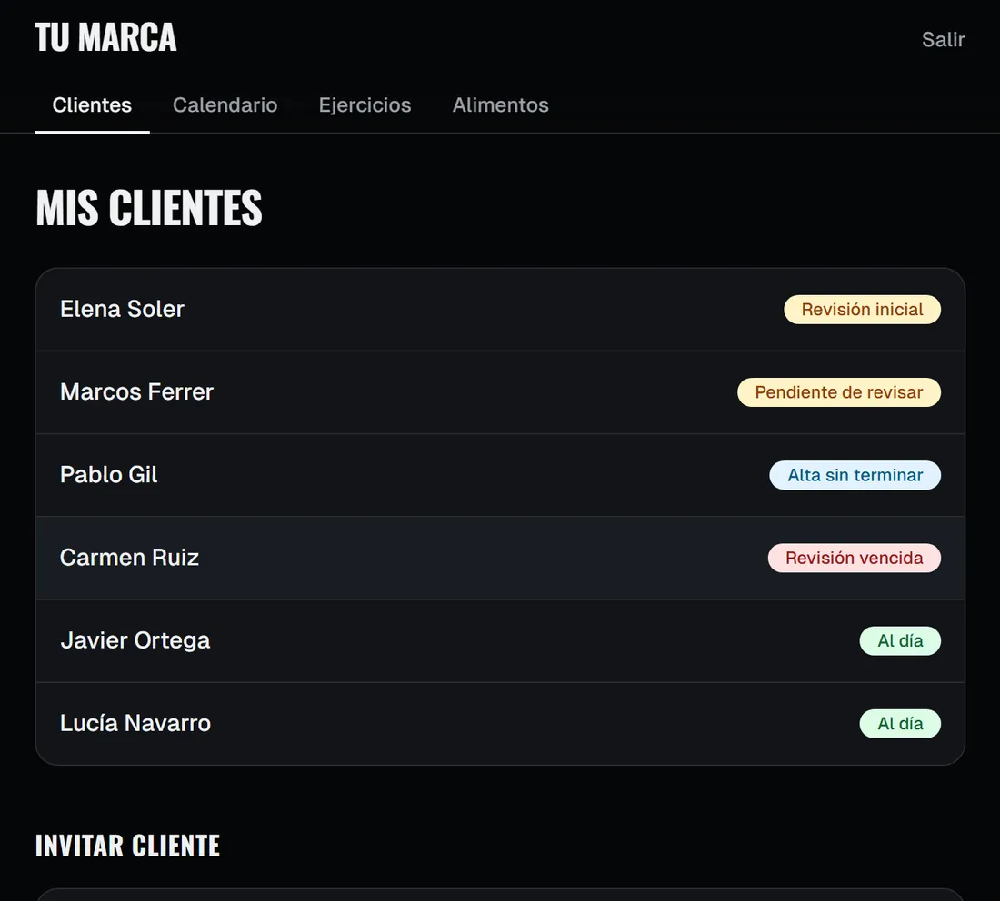
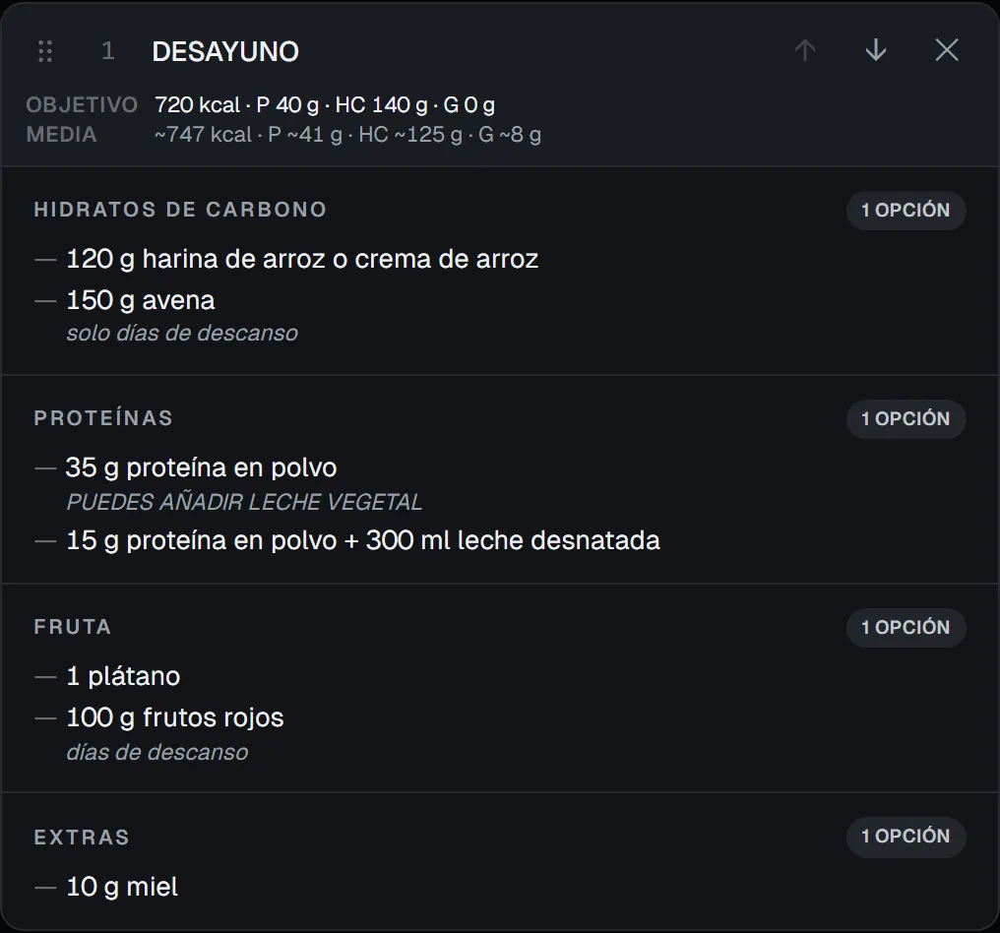
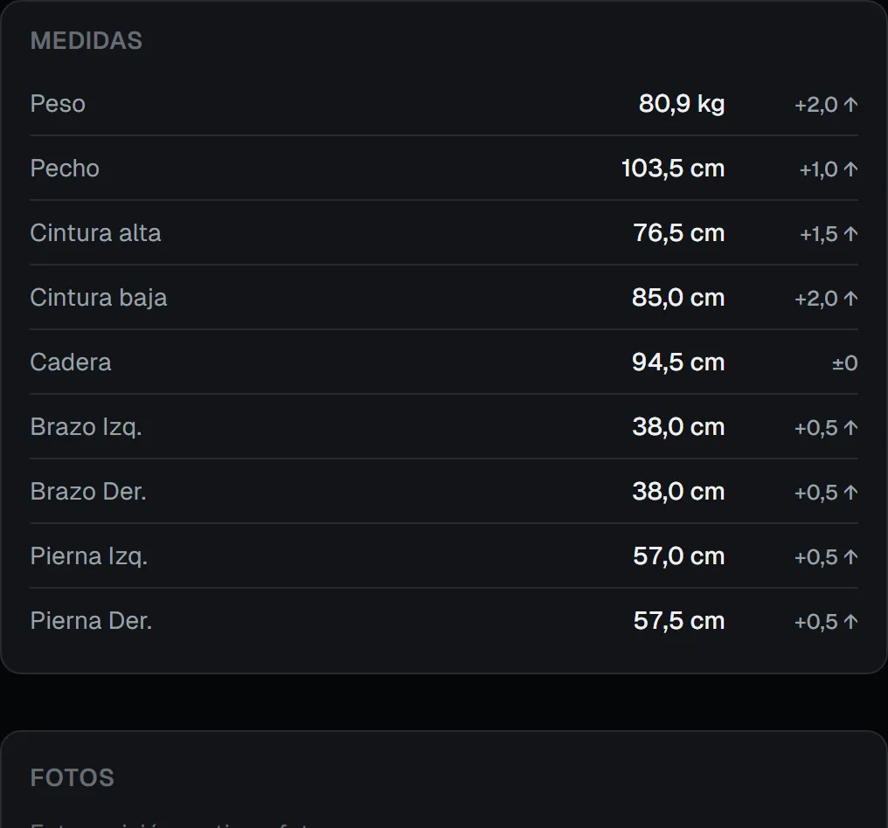
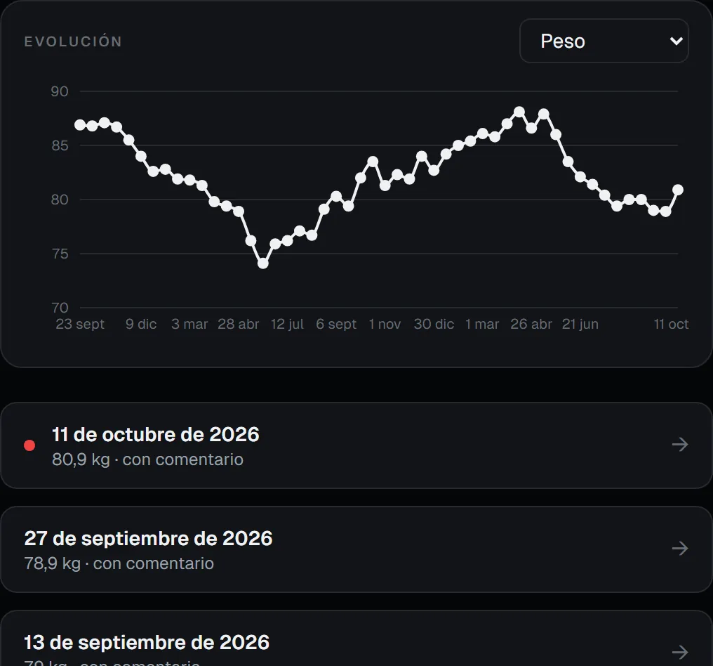

Custom apps for personal trainers · 2026Apps a medida para entrenadores · 2026
Macu Apps
Custom apps for personal trainers, with each trainer’s brand. My own trainer runs his online coaching from his, and his 18 clients have their diet, training and check-ins on their phone.Apps a medida para entrenadores personales, con la marca de cada uno. Mi propio entrenador lleva desde la suya su asesoría online, y sus 18 clientes tienen la dieta, el entreno y las revisiones en el móvil.
- 18
- clients use it; all of them in the last monthclientes la usan; todos, en el último mes
- Aug 2026ago 2026
- in productionen producción
The real app with sample clients: first what the client sees, then the coach.La app real con clientes de ejemplo: primero lo que ve el cliente y después el coach.
The problemEl problema
My trainer wanted an app with his own brand, so that his clients’ plans and progress stopped living in PDFs and chats. His clients had to actually open it, and he had to be able to run his coaching from it.Mi entrenador quería una app con su marca, para que los planes y el progreso de sus clientes dejaran de vivir en PDF y chats. Sus clientes tenían que abrirla de verdad, y él tenía que poder llevar su trabajo desde ella.
What the client seesLo que ve el cliente
On their phone, as an installable app: an onboarding questionnaire and then, day to day, these four screens.En el móvil, como una app instalable: un cuestionario de alta y, después, en el día a día, estas cuatro pantallas.

DietDieta
The day’s target in calories and macros, and each meal with the options the coach allows, so rice can become pasta without leaving the plan.El objetivo del día en calorías y macros, y cada comida con las opciones que permite el coach, para cambiar el arroz por pasta sin salirse del plan.

TrainingRutina
The day’s session with the coach’s notes: weight and reps for each set, a rest timer, swapping an exercise when the machine is taken, and a video for the coach to check technique.La sesión del día con las notas del coach: peso y repeticiones de cada serie, temporizador de descanso, cambiar un ejercicio si la máquina está ocupada y un vídeo para que el coach corrija la técnica.

ProgressProgreso
Consistency over the last year, one square per day, and how weight and measurements have changed since the start.La constancia del último año, un cuadro por día, y cómo han cambiado el peso y las medidas desde el principio.

Check-inRevisión
Every two weeks: weight, measurements marked on a body diagram, four photos and how the plan went. It goes straight to the coach’s queue.Cada dos semanas: peso, medidas señaladas sobre una figura, cuatro fotos y cómo ha ido el plan. Entra directamente en la cola del coach.
What the coach seesLo que ve el coach
On the computer, the coach runs the whole coaching business from one dashboard.En el ordenador, el coach lleva toda su asesoría desde un panel.

Clients, sorted by what needs attentionLos clientes, por lo que requiere atención
A check-in to review, one that’s overdue, an onboarding left halfway or up to date: the coach knows where to start without opening each client.Una revisión por mirar, una vencida, un alta a medias o al día: el coach sabe por dónde empezar sin abrir cliente por cliente.

Diet and training editorsEditores de dieta y rutina
Plans are built meal by meal, in blocks with options, with each meal’s target next to the average of its options. A plan can be saved before the client sees it, and a day or a meal can be reused from another client’s plan.Los planes se montan comida a comida, en bloques con opciones, con el objetivo de cada comida junto a la media de sus opciones. Se pueden guardar antes de que los vea el cliente y reutilizar un día o una comida del plan de otro cliente.

Reviewing a check-inMirar una revisión
Each check-in against the previous one, measurement by measurement, so the coach sees what has changed at a glance before reading the client’s answers.Cada revisión frente a la anterior, medida a medida, para que el coach vea de un vistazo qué ha cambiado antes de leer las respuestas del cliente.

The whole historyTodo el historial
The weight curve since the first check-in and every past check-in with the coach’s comment. A red dot marks the one still waiting for an answer.La curva de peso desde la primera revisión y cada revisión pasada con el comentario del coach. Un punto rojo marca la que aún espera respuesta.
Screenshots of the demo, with sample clients; the app is in Spanish. The coach also has exercise and food libraries, a calendar and payments.Capturas de la demo, con clientes de ejemplo. El coach tiene además librerías de ejercicios y alimentos, un calendario y los pagos.
UnderneathPor debajo
- Data: PostgreSQL with row-level security, so each client can only read their own data, and an installable PWA with push notifications.Datos: PostgreSQL con seguridad a nivel de fila, para que cada cliente solo pueda leer sus datos, y una PWA instalable con notificaciones.
- Photo comparison: the coach’s progress photos line up on their own, with pose detection that runs in the browser (MediaPipe), so the photos never leave the device.Comparar fotos: las fotos de progreso se alinean solas para el coach, con detección de pose en el navegador (MediaPipe), así que las fotos no salen del dispositivo.
DecisionsDecisiones
One app per trainer, on a shared coreUna app por entrenador, sobre un núcleo común
Each trainer gets an app adapted to how they work, not a template with a different logo. Underneath there’s a common core: the name, the logo and the legal details live in one configuration file, so the next app starts from the core instead of from a copy.Cada entrenador tiene una app adaptada a su forma de trabajar, no una plantilla con otro logo. Debajo hay un núcleo común: el nombre, el logo y los datos legales viven en un fichero de configuración, así que la siguiente app parte del núcleo y no de una copia.
My own server, to learn to run productionServidor propio, para aprender a operar producción
The app started on Vercel and managed Supabase. In October 2026 I moved it, database included, to my own Linux server. It wasn’t about saving money: I wanted to learn to run an app in production end to end, with the care that health data calls for. The server is set up with Ansible from the repository, GitHub Actions only deploys when the tests pass, encrypted backups run every hour and are stored off the server, restoring them has been tested, and errors reach my inbox within five minutes.La app empezó en Vercel y Supabase gestionado. En octubre de 2026 la pasé, con la base de datos, a un servidor Linux propio. No fue por ahorrar: quería aprender a operar una app en producción de principio a fin, con el cuidado que piden unos datos de salud. El servidor se configura con Ansible desde el repositorio, GitHub Actions solo despliega si pasan los tests, hay copias cifradas cada hora guardadas fuera del servidor, la restauración está probada y los errores me llegan por correo en menos de cinco minutos.
How I build itCómo lo construyo
With AI coding agents, and I review and verify every change. Unit, property-based and end-to-end tests run on every push, and a failing build doesn’t deploy. Every decision and its reason go into a knowledge base, maintained by an LLM, that the agents read before each task.Con agentes de IA, y reviso y compruebo cada cambio. Los tests unitarios, de propiedades y end-to-end se pasan en cada push, y si algo falla no se despliega. Cada decisión y su porqué van a una base de conocimiento, mantenida por un LLM, que los agentes leen antes de cada tarea.
ResultsResultados
My trainer’s app has been in production since 26 August 2026. All 18 clients have used it in the last four weeks.La app de mi entrenador está en producción desde el 26 de agosto de 2026. Los 18 clientes la han usado en las últimas cuatro semanas.
What’s nextLo siguiente
Apps for more trainers, starting from the same core.Apps para más entrenadores, a partir del mismo núcleo.